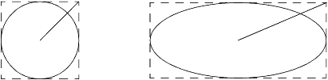

|
|
This chapter covers some issues in porting the graphical user-interface (GUI) portion of the MIDP Reference Implementation. The GUI portion of MIDP is implemented in the javax.microedition.lcdui package and the javax.microedition.lcdui.games package. The GUI portion of MIDP is often called LCDUI.
Most of LCDUI is written in the Java™ programming language, although some of the code is written in C. The native methods are written using portable code whenever possible, but some will require additional porting. Native methods that require additional porting have an LCDUI prefix. Their signatures are listed in midpInstallDir/src/share/native/defaultLCDUI.h.
This chapter discusses issues in porting both the javax.microedition.lcdui and the javax.microedition.lcdui.games packages. It contains the sections:
The javax.microedition.lcdui package contains APIs for creating both structured screens and unstructured screens. (MIDP 2.0 also has a hybrid class, CustomItem, which is an unstructured item for a form.) The parent class for both structured and unstructured screens is Displayable. It contains the common capabilities, such as a title, a ticker (an instance of the Ticker class), and the ability to have associated abstract commands (instances of the Command class.) You will probably extend Displayable if you replace RI widgets with native ones. (See Section 6.3.2 "Example: Replacing Part of DateField" for an example.)
Structured screens are portable but do not give the application access to low-level input mechanisms or control of the screen. Lists are an example of a structured screen. You create a structured screen with the LCDUI’s high-level APIs. The high-level APIs are subclasses of the Screen class: Alert, Form, List, and TextBox. A form is a screen that contains items. These items are subclasses of the Item class: ChoiceGroup, CustomItem, DateField, Gauge, ImageItem, Spacer, StringItem, and TextField. An alert can have an associated AlertType so that its behavior can be customized for different purposes.
Unstructured screens provide access to low-level I/O, but can be less portable. A screen that shows the push puzzle game board is an example of an unstructured screen. You create unstructured screens with the LCDUI’s low-level APIs. The low-level APIs are provided by the classes Canvas, GameCanvas, and Graphics.
The javax.microedition.lcdui.games package is series of classes for creating rich gaming content for wireless devices.
This chapter discusses some issues in porting low-level graphics classes, such as Canvas and Graphics. It covers the topics:
The Graphics class provides drawing primitives for text, images, lines, rectangles, and arcs. This section describe the graphics coordinate system, and how that affects the drawing of lines, rectangles, and filled rectangles. It also explains the requirements of drawing arcs. It contains the sections:
A Graphics object has a coordinate system with its origin at the upper left-hand corner of the destination. The X-axis direction is positive towards the right, and the Y-axis direction is positive downwards. The coordinate system and graphics implementation in the MIDP Reference Implementation assume that the device has square pixels. If your device does not have square pixels, you will have to modify the graphics subsystem to take the different pixel shape into account. An application must be able to rely on equal horizontal and vertical distances being equal on the device display.
The coordinate system represents locations between pixels, not the pixels themselves. The first pixel in the upper left corner of the display lies in the square bounded by coordinates (0,0), (1,0), (0,1), and (1,1). This is shown in the following figure.
A Graphics object must draw a line between the coordinates (x1,y1) and (x2,y2). In the coordinate system, that means that the line begins below and to the left of the (x1,y1), and ends below and to the left of (x2,y2). This is shown in the following picture, which shows a line drawn from (2,2) to (6,6).
A Graphics object draws and fills rectangles such that a drawn rectangle will be one pixel larger than a filled rectangle of the same requested height and width. That is, the MIDP 2.0 Specification says that the drawRect method, “Draws the outline of the specified rectangle...The resulting rectangle will cover an area (width + 1) pixels wide by (height + 1) pixels tall.” In contrast, the fillRect method, “Fills the specified rectangle with the current color.”
The following figure shows two rectangles. The one on the left shows the drawRect method drawing a rectangle starting at (0,0) with a width of 8 and height of 6. The one on the right shows the fillRect method’s rectangle that starts at (0,0) and has a width of 8 and height of 6. That is, they correspond to the calls:
It can be difficult to understanding the contract that the drawArc method must fulfill. This section explains its requirements. Note that the methods that draw and fill arcs have the same size difference as that described in Section 6.2.1.3 "Drawing and Filling Rectangles.”
To draw an arc means to draw all or part of an ellipse. The mathematical definition of an ellipse is:
The value of the variable a controls the width of the ellipse, and the value of the variable b controls the height. If a = 2 and b = 1, the ellipse is twice as wide as it is high. It looks like this:
If a and b have the same value, the equation reduces to a circle:
And it looks like this:
The drawArc method specification says:
Angles are interpreted such that 0 degrees is at the 3 o'clock position. A positive value indicates a counter-clockwise rotation while a negative value indicates a clockwise rotation.
The specification uses the common convention that 0 degrees lies where the circle crosses the positive x axis—sometimes referred to as 3:00 like in the specification—and that positive degrees lie with the positive values on the y axis (they go counter-clockwise) and negative degrees lie with the negative values on the y axis (they go clockwise). The following figure shows the angles at 0, 90, and -90:
The specification then says:
The center of the arc is the center of the rectangle whose origin is (x, y) and whose size is specified by the width and height arguments.
The drawArc method has x, y, width, and height as four of its arguments. Remember that the coordinate system of a canvas has its origin (0, 0) at the upper left corner, the numeric values of the x-coordinates monotonically increase from left to right, and the numeric values of the y-coordinates monotonically increase from top to bottom.
To draw an ellipse, the value of the variable a in the ellipse equation must be w/2 and the variable b must be h/2. The center of the ellipse must be at (x+(w/2), y + (h/2)). Using these values creates an ellipse that is centered within the rectangle, as specified by the method description. The ellipse is also tangent to the rectangle at four points, which are the minimum and maximum radii of the ellipse; this shows that the size of the ellipse is specified by the rectangle’s width and height arguments, as specified by the method description.
The following figure shows a canvas with an arc that meets these requirements; the arc is a full ellipse. The figure shows the ellipse within the rectangle mentioned in the specification. The rectangle is shown with a dashed line because it would not actually be drawn on the canvas. The rectangle’s width represented by the variable w, and its height by the variable h.
The final part of the specification covers what happens when the method is asked to draw only part of the ellipse. It says:
The angles are specified relative to the non-square extents of the bounding rectangle such that 45 degrees always falls on the line from the center of the ellipse to the upper right corner of the bounding rectangle. As a result, if the bounding rectangle is noticeably longer in one axis than the other, the angles to the start and end of the arc segment will be skewed farther along the longer axis of the bounds.
In a circle, there is no skewing of the angles, as shown in the 45 and -120 degree angles in the following figure:
Skewing appears when the circle is stretched into an ellipse, as shown in the following figure. The point that was 45 degrees on the circle gets shifted, so the angle of the line from the center to that point is no longer 45 degrees. Technically, there is 45 “degrees of arc” between the x axis and the labeled spot, but on paper the angle of the line from the center to that point is not really 45 degrees.
A port of this method must work the same way: it must use the start and end points of a partial arc as though the ellipse were a circle. To make sure that the skewing happens correctly, the MIDP 2.0 Specification requires that 45 degrees always falls on the line from the center of the ellipse to the upper right corner of the bounding rectangle, as shown by the circle and ellipse in the following figure. (The figure again shows the bounding box with a dashed line. The figure also extends the 45 degree line so that it touches the box.)

The (x,y) coordinates of a point on a circle are calculated using sine and cosine. The (x,y) coordinates of the point at d degrees on a circle of radius r is:
For example, on a circle where r = 1 the (x,y) coordinates for the point that is at 30 degrees are:
The equation for the corresponding point at d degrees on an ellipse with axes a and b is:
Drawing and filling rectangles with rounded corners combines the previous two topics, drawing rectangles and drawing arcs. (The difference between drawing and filling a rectangle with rounded corners is one pixel in height and width, as discussed in Section 6.2.1.3 "Drawing and Filling Rectangles" .) A MIDlet draws a rectangle with rounded corners by specifying not only the starting pixel, the height, and the width of the rectangle, but also the width and height of the arc to use to round the corners.
The following figure shows a rectangle drawn with round corners using the call drawRoundRect(0, 0, 30, 40, 4, 3). That is, the rectangle starts at the upper left corner, and is 30 (+1) pixels wide, 40 (+1) pixels high, with corners rounded with an arc that is four pixels wide and three pixels high.
The MIDP 2.0 Specification supports transparency in Portable Network Graphics (PNG) images. (See
http://www.w3.org/Graphics/PNG/ and
http://www.libpng.org/pub/png for more information on Portable Network Graphics.) Transparency is useful for creating non-square images. That is, a graphic is a square or rectangular image. If part of that image is opaque and part is transparent, the image can appear to be non-square.
Transparency may exist only in immutable, off-screen images created from PNG images or created from arrays of ARGB (alpha, red, green, blue) data. Moving an image that contains transparency data into a mutable Image instance, (rendering it) changes the data into a native, opaque format and the transparency information is lost.
One way that an image can encode transparency is by providing image data that specifies the color of each pixel, and a chunk that specifies a color (a tRNS chunk). All bits of that color in the image are considered transparent.
Another way that an image can encode transparency is by including an alpha value with each pixel. This is ARGB (alpha, red, green, blue) data. For a black and white image, eight bits encode a pixel’s alpha value (00000000 is transparent and 11111111 is opaque), and eight bits specify its color (00000000 is black and 11111111 is white). For a color image, some number of bits encode a pixel’s alpha value (all ones is fully opaque, all zeros is fully transparent, and values in between is semi-transparent) and the same number of bits specify the red, blue, and green elements of each pixel. The number of bits is usually eight or sixteen; the MIDP Reference Implementation uses sixteen.
An image can also use a palette alpha encoding technique, which provides image data that specifies the color of each pixel, and a chunk that specifies alpha values for corresponding RGB values (a PLTE chunk).
A compliant MIDP 2.0 implementation must be able to render full transparency. That is, it must treat pixels with an alpha value of zero (or the color in a tRNS chunk) as fully transparent, and must treat pixels with alpha values greater than zero as non-transparent. The MIDP implementation may choose to treat non-transparent pixels as opaque or to implement alpha-blending, a technique that renders non-transparent pixels in a way that shows some of whatever is behind them.
A MIDP implementation that supports alpha-blending could use either of two techniques to interpret non-transparent pixels:
However you support transparency in your port, follow this general rule: process transparency data at decode time. There are two reasons for this rule:
The MIDP graphical user-interface should be well integrated with the device, so that a MIDlet looks and behaves as much as possible like a native application. Commonly, ports of the MIDP Reference Implementation replace the implementations of the Screen classes with implementations that use the native widgets on a device.
As you replace the MIDP Reference Implementation widgets, keep in mind that TextBox and List are implemented using Form, and all subclasses of Item are implemented in the same way as CustomItem. The exception to the Item subclass implementation is a pop-up choice group. The pop-up choice group is implemented in native code.
This section covers topics that help you replace the Reference Implementation’s classes with native widgets:
To replace a Screen subclass with a native widget:
showNotify and hideNotify.
Depending on your system, you may also want to handle the paint method
This section is an example of how to replace part of the MIDP Reference Implementation’s LCDUI code with a native widget. It replaces the time editor for the DateField class. The DateField class is defined in the MIDP 2.0 Specification, which says that the time value, date value, or both can be editable.
This section has the topics:
For this example, assume that there is a built-in editor for time values that has the following C programming interface:
/* set the time. timeVal is in seconds since midnight */ extern void TimeEditor_setTime(int timeVal); /* get the time value (in seconds since midnight) */ extern int TimeEditor_getTime(); /* make the time editor visible. This gives it control * over the screen, and causes it to get all user input * events (except that the keys used for abstract commands * are still passed through to the application). */ extern void TimeEditor_setVisible(int shown); /* repaint the indicated portion of the screen. */ extern void TimeEditor_repaint(int x, int y, int width, int height);
This section walks through the steps for substituting the native time editor for the one in the MIDP Reference Implementation. The section follows the steps listed in Section 6.3.1 "General Instructions.” It has the topics:
The first step is said to be removing most of the code for the screen that you want to replace. This example is a little more complex, because the MIDP Reference Implementation combines date and time editing into a helper class called EditScreen. The example, though, assumes that the device has only a time editor. As a result, the first task is to remove the time-editing code from the EditScreen class. You can then create a new helper class that uses the native time editor. The example calls the new class TimeEditor. (This example uses only the new class; it does not show the EditScreen class with the time editing code removed.)
The following code example shows the empty TimeEditor class. Notice that it extends Displayable. As mentioned in the introduction, Displayable is the highest level class that can be shown on the device screen. It can have a title and abstract commands; these will be added later.
class TimeEditor extends Displayable implements CommandListener { public TimeEditor(Screen returnScreen, DateField df) { } public void setDateTime(Date currentValue) { } public void commandAction(Command cmd, Displayable s) { } }
The second step is to add package-private native methods for showNotify, hideNotify, and paint. The class then adds these lines:
class TimeEditor extends Displayable implements CommandListener {
...
public void commandAction(Command cmd, Displayable s) {
}
native void paint0(int x, int y, int w, int h);
native void showNotify();
native void hideNotify();
}
The native methods for passing data back and forth between your native GUI and the public API are getTime and setTime. The following code example shows them in the TimeEditor class:
class TimeEditor extends Displayable implements CommandListener {
...
private native void paint0(int x, int y, int w, int h);
native void showNotify();
native void hideNotify();
native void setTime(int timeVal);
native int getTime();
}
Step four, filling in the public methods, is where you add the code for the constructor and for handling the abstract commands. The following code example shows the whole TimeEditor class. The code uses native methods to get and set the time, to show and hide the screen, and to refresh a portion of the display.
The TimeEditor also has two abstract commands. Their labels are Done and Back. If the native component handled these commands itself (that is, if it already had a way for the user to leave the editor with and without saving the new value), then you would have to find a way to get those commands back to MIDP.
Finally, note the synchronization done in the commandAction method. As noted in Section 5.3.2 "Public Method Conventions" , LCDUILock must be held whenever there is access to shared data. The method, therefore, takes the LCDUILock when it sets a value in the date field. Section 5.3.5 "Application Callout Conventions" says that the LCDUILock must not be held during any callout, because doing so may give rise to deadlock. The call to the application’s ItemStateChangedListener, therefore, is done after dropping the LCDUILock.
class TimeEditor extends Displayable implements CommandListener { DateField field; Screen returnScreen; Command Back = new Command("Back", Command.BACK, 0); Command OK = new Command("Done", Command.OK, 1); public TimeEditor(Screen returnScreen, DateField df) { field = df; addCommand(OK); addCommand(Back); setCommandListener(this); this.returnScreen = returnScreen; } public void setDateTime(Date currentValue) { System.err.println("setDateTime : currentValue = " + currentValue); calendar.setTime(currentValue); int timeVal = calendar.get(Calendar.HOUR_OF_DAY)*60 + calendar.get(Calendar.MINUTE); setTime(timeVal); } public void commandAction(Command cmd, Displayable s) { Form form = null; Item item = null; synchronized (Display.LCDUILock) { if (cmd == OK) { field.saveDate(calendar.getTime()); item = field; form = (Form)item.getOwner(); } currentDisplay.setCurrent(returnScreen); } // synchronized // SYNC NOTE: Move the call to the application's // ItemStateChangedListener outside the lock if (form != null) { form.itemStateChanged(item); } } void callPaint(Graphics g, Object target) { super.callPaint(g, target); paint0(g.getClipX() + g.getTranslateX(), g.getClipY() + g.getTranslateY(), g.getClipWidth(), g.getClipHeight()); } private native void paint0(int x, int y, int w, int h); native void setTime(int timeVal); native int getTime(); native void showNotify(); native void hideNotify(); private Calendar calendar = Calendar.getInstance(TimeZone.getDefault()); }
Because the helper classes have been changed, the DateField class itself must also be changed. The EditScreen class now holds only date editing code. Instead of using only calls to EditScreen, the DateField class must call methods of TimeEditor to enable the user to edit the time. Further, because there is no longer a single editor for changing the date and the time, the code in the DateField class that provided this capability through the EditScreen class must also be changed. The following code examples will show these changes in the DateField class’s callKeyPressed method. The first code example shows the original MIDP Reference Implementation code. Note that the editor is provided by EditScreen, and there are cases for DATE editing, TIME editing, and DATE_TIME editing:
/** * Called by the system to signal a key press * * @param keyCode the key code of the key that has been pressed */ void callKeyPressed(int keyCode) { if (keyCode != Display.KEYCODE_SELECT) { return; } Screen returnScreen = getOwner(); if (editor == null) { editor = new EditScreen(returnScreen, this); } switch (mode) { case DATE: ... editor.setDateTime(currentDate.getTime(), DATE); break; case TIME: editor.setDateTime(initialized ? currentDate.getTime() : EPOCH, TIME); break; case DATE_TIME: editor.setDateTime(currentDate.getTime(), (highlight < 1) ? TIME : DATE); } returnScreen.resetToTop = false; returnScreen.currentDisplay.setCurrent(editor); }
The following code example shows the new code. Note that although EditScreen still provides a date editor, TimeEditor provides the time editor. Also note that there is no longer a DATE_TIME editing option.
/** * Called by the system to signal a key press * * @param keyCode the key code of the key that has been pressed */ void callKeyPressed(int keyCode) { if (keyCode != Display.KEYCODE_SELECT) { return; } Screen returnScreen = getOwner(); int editMode = this.mode; if (editMode == DATE_TIME) { editMode = (highlight < 1) ? TIME : DATE; } switch (editMode) { case DATE: ... if ((editor == null) || !(editor instanceof EditScreen)) { editor = new EditScreen(returnScreen, this); } ((EditScreen)editor).setDateTime (currentDate.getTime(), DATE); break; case TIME: if ((editor == null) || !(editor instanceof TimeEditor)) { editor = new TimeEditor(returnScreen, this); } ((TimeEditor)editor).setDateTime(initialized ? currentDate.getTime() : EPOCH); } returnScreen.resetToTop = false; returnScreen.currentDisplay.setCurrent(editor); }
The final step in the task list for substituting a native widget is implementing the native methods that you declared in the "Adding Package Private Native Methods” and "Adding Private Native Methods” sections. The following code example shows the C language functions that satisfy the declarations. The functions use the the native time-editor’s’ interface. (See Section 6.3.2.1 "Native Time Editor’s Interface" for its API.) They also use calls to KNI for getting parameters off of and onto the stack. (See the documentation that came with CLDC for more information on KNI.)
KNIEXPORT KNI_RETURNTYPE_VOID Java_javax_microedition_lcdui_TimeEditor_paint0() { int clipHeight = KNI_GetParameterAsInt(4); int clipWidth = KNI_GetParameterAsInt(3); int clipY = KNI_GetParameterAsInt(2); int clipX = KNI_GetParameterAsInt(1); TimeEditor_repaint(clipX, clipY, clipWidth, clipHeight); KNI_ReturnVoid(); } KNIEXPORT KNI_RETURNTYPE_VOID Java_javax_microedition_lcdui_TimeEditor_setTime() { int timeVal = KNI_GetParameterAsInt(1); TimeEditor_setTime(timeVal); KNI_ReturnVoid(); } KNIEXPORT KNI_RETURNTYPE_INT Java_javax_microedition_lcdui_TimeEditor_getTime() { KNI_ReturnInt(TimeEditor_getTime()); } KNIEXPORT KNI_RETURNTYPE_VOID Java_javax_microedition_lcdui_TimeEditor_showNotify() { TimeEditor_setVisible(TRUE); KNI_ReturnVoid(); } KNIEXPORT KNI_RETURNTYPE_VOID Java_javax_microedition_lcdui_TimeEditor_hideNotify() { TimeEditor_setVisible(FALSE); KNI_ReturnVoid(); }
In the MIDP Reference Implementation, popup choice groups are implemented differently from other LCDUI items: they are written in native code instead of the Java programming language. (In general, the technique of moving to native code when faced with a problem in the Java programming language layer can be useful.) This section explains why native code is used, so that you can better understand the MIDP Reference Implementation and how to port it.
The reasons for using native code for popup choice group stem from the fact that, for maximum code reuse, the MIDP Reference Implementation gives subclasses of Item the same capabilities as those given to the CustomItem class by the MIDP 2.0 Specification.
The MIDP 2.0 Specification allows a custom item to request repaints within its bounds (the space allotted to it on its form). A MIDP implementation must ensure that the item does not repaint other parts of the screen. A popup choice group, as currently designed, needs to draw its popup window of elements beyond its granted item bounds. Because a custom item cannot do this, the current MIDP Reference Implementation architecture makes it impossible for a pop-up choice group written in the Java programming language to draw its popup window of elements.
The MIDP 2.0 Specification does not give a custom item access to its position on the screen. (A custom item can know its height and width on its form, but there is no API that gives it its location on the screen.) A popup choice group needs access to its location so that it locates its popup correctly. For example, if the choice group is at the bottom of the viewport, the popup should display up from the bottom; if it is at the top of the viewport, the popup should display down from the top. Again, the current MIDP Reference Implementation architecture makes it impossible to write the popup choice group in the Java programming language.
The native functions that implement the popup choice group are LCDUIupdatePopupElement and LCDUIinitPopupMenu. These methods are called by the methods updatePopupElements and getPopupSelection in the ChoiceGroup class. If you want to port the native functions to use a menu on your device that allows the user to choose only one element from its list but does not have popup behavior, you may. Your port will still be compliant with the MIDP 2.0 Specification.
The javax.microedition.lcdui.game package is designed so that it can be implemented using only the functionality provided by the javax.microedition.lcdui APIs. For example, methods were added to the Graphics and Image classes to help develop games. The Image.getRBG method is one such addition. Because of this design, the classes in the game package need not call native methods directly. If you have ported the LCDUI functionality to your device, you could port the game package without changes. (You might want to make changes, however, for better performance.)
The MIDP Reference Implementation implements the game package in the Java programming language using the LCDUI APIs. It relies heavily on the javax.microedition.lcdui.Graphics class; the methods clipRect, setClip, and drawRegion are extensively used. It requires LCDUI’s transparency support for the Layer class. The GameCanvas class extends the javax.microedition.lcdui.Canvas class, adding key latching and an offscreen buffer. The Tile and Sprite classes are implemented as a predefined series of LCDUI images.
Because perceived performance is very important to games, you might want to enhance your MIDP port by using any available hardware capabilities to speed up portions of the game API. Hardware capabilities that are meant to accelerate gaming content may include:
In addition to the hardware capabilities aimed at games developers, your MIDP port might get performance improvements from accelerating the underlying graphics APIs. For example, if your device can do a fast bitblit, you could use this functionality to improvement the speed of rendering Sprite and TiledLayer objects. In addition, if your device does not have collision detection in hardware, you might want to move the pixel-level collision detection to native code.
|
|
Porting MIDP MIDP Reference Implementation, Version 2.0 FCS |
Copyright © 2002 Sun Microsystems, Inc. All rights reserved.